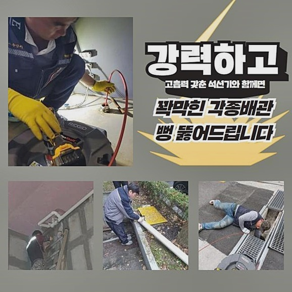
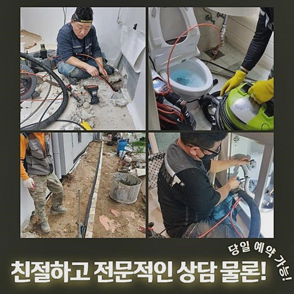
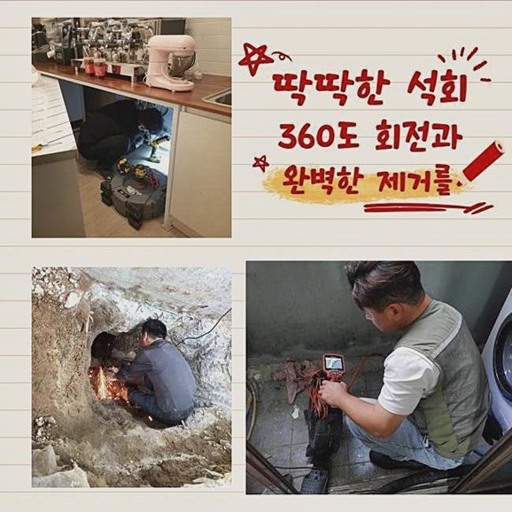
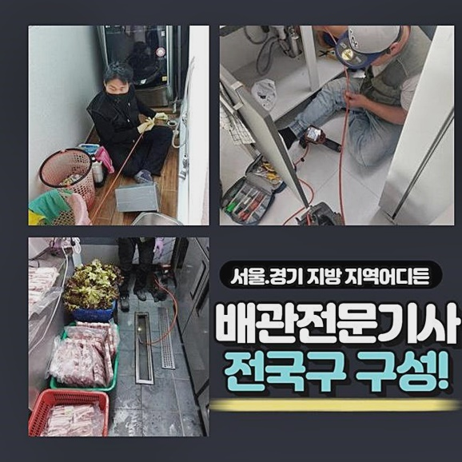
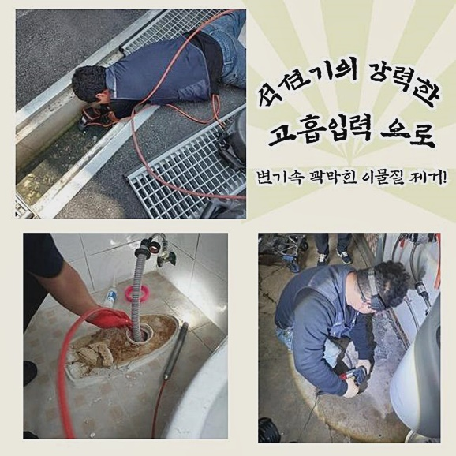
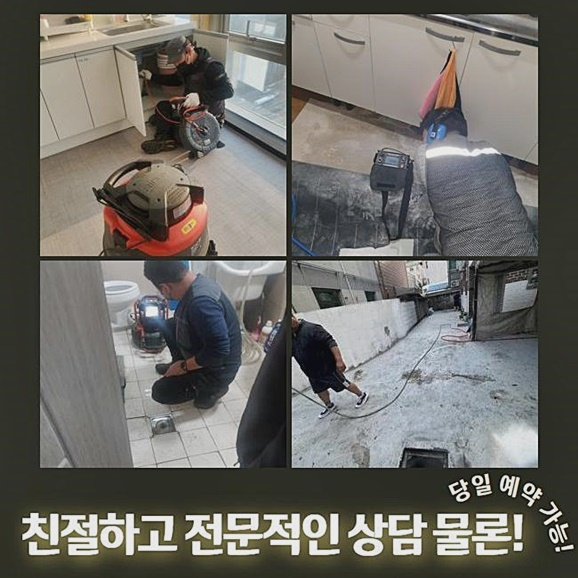
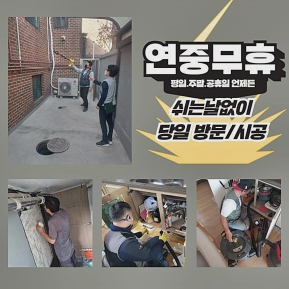

🏠 강서구 가양동욕실역류 오쇠동 배관뚫기 누수공사
용인시 처인구 배관막힘 전문 시공 후기

📋 작업 개요
- 위치: 용인시 처인구, 수원시 영통구, 화성시 동탄
- 서비스 유형: 배관막힘, 누수수리, 고압세척, 내시경점검
- 작업 일시:
- 업체명: 하수구수사대 (010-5615-2118)
🔍 문제 상황
강서구 가양동욕실역류 오쇠동 배관뚫기 누수공사
배수관에 막힘증세가 발발할 때라면 허둥지둥 하게됩니다
지금부턴 막힘과 관련해 일러드릴 예정이니 꼼꼼히 보신다라면 이득이 될거라 장담합니다!
우리들이 이용하시는 수도는 각자의 개체마다 빠지는 것이 아닌 집결지 역할을 하는 공용배수관으로 모일 목적으로 구조적으로 설계되어있고 출수구로 빠지죠
그렇기때문에 보여지지 못한다고해도 배수관은 땅 속에 복잡하게 이어져있으므로 막혀버리는 문제들이 발생되었을 땐 여타 부위에서 이물질이 쌓이게되서 증상들이 불거질지 몰라요
문제들이 거듭되면 어느 지점에서 물들을 틀면 예상치 못한 지점에서 역류가 불거지거나 집수부분으로 전체적으로 물들이 배출되지 못하는 사태가 야기되므로 이땐 전문진과 올바르게 해결해야합니다
지금부턴 개수대에 증상들이 생겨버린 상황으로 사용 시에 세탁기가 있는 다용도 시설에도 피해가 생겨 저희들에게 황급히 방문해주었음 한다 의뢰해주셨어요
방문드려 사태파악에 들어가니 싱크대 하수배관들은 세탁기가 있는 배수구가 연결자체가 되있었고 세탁실까지의 피해결과로 발전된거라 생각했죠

🔎 원인 분석
💡 전문가 진단: 정밀 진단 장비를 사용하여 슬러지의 고착 여부를 판명하고 타격/세척 작업을 실시했습니다.
그저 싱크대쪽으로 배수되지못해서 불편들이 불어난것인데 오래될수록 이물질이 점차 깊숙한 지점으로 흘러들어가 쌓이므로 메인배수관까지 막히는 사태가 있답니다
테스트해보려고 싱크대서 수돗물을 틀어보았더니 슬러지형태의 이물과 오염원들이 세탁실로 역류하는걸 파악했고 다용도실 문제의 연유가 주방과 연관성이 있는것임을 인지했죠
고객분은 주방배수구와 세탁기 모집수정으로에서 악취자체가 생겨나서 생활속에서 불편을 겪었지만 중간에 클린액체를 이용하며 급한 불을 잠재웠다고 하는데요
육안으로 보았을때도 하수관에 오물들이 축적되어있는데 싱크볼을 쓰면서 지속하여 솟구치는 바람에 수직배관으로 흘러야하는 오수들이 빠지지 못한채 솟구쳐버린 장소였습니다
이러한 설비는 집합건물에서 흔하게 보이는데 해당 사례처럼 양 공간에 갑작스러운 문제들이 발생한다면 이런저런 측면에서 난처함만이 남을거에요
의뢰인께 지금의 내용들을 꼼꼼히 설명드렸고 지금의 상태를 해결하도록 장치들을 써서 제대로 된 배수관세척에 들어갔죠
1순위로 석션장치로 안빠지던 오물들을 흡입해 깨끗하게하는 수순을 밟고 석션라인으로 신속히 빨리는 소리를 났습니다
배수구의 틈들을 없게 하고 압박해주니 배수관의 심부에 있었던 부유물을 없애줬습니다

🔧 작업 과정
이곳에서처럼 막혀버린 배수관서 석션장치로 공간을 확보하면 내시경장비를 가용한 다음 내측 상태를 세심하게 확인합니다
어디에 문제를 일으키는지 하수관에 오물이 몸집을 불리며 혹시라도 파손이 없는지 다양한 방면으로 체크합니다
내시경장치를 통해 관찰하니 개수대서 이어진 배수관과 세탁실의 관로까지 잔해가 많아 막혀져있는 모습이였고 끈끈히 다른 이물과 엉켜있고 딱딱하게 고착화가 이루어진 이물까지 많았으며 문제의 연유들을 정확하게 주시해보았습니다
완성도 있는 결과 보장을 해줄 기반적 측면으로 샤프트장비를 준비한 다음 해당 기계의 헤드부분을 투입하고 끝에 달린 사슬부로 이물들을 분쇄했어요
해당 장소는 세탁실과 주방라인들이 이어진 모습이였기에 스케일링 뒤에는 석션을 통해 미세한 잔해물도 역류될 수 없게끔 꼼꼼히 청소를 이어갔어요
해당 과정에서는 세탁실쪽과 주방 모두에서 장비들을 써서 세척을 진행시켰기에 빠르게 주방과 세탁실의 문제들을 해결해냈고 벽측까지 청소되었고 긴 시간동안에는 막히는 건 염려들은 안하셔도 되요
저희들이 쓰는 샤프트는 선이 가늘고 유연하므로 심층부라던지 엘보모양까지 원활히 작업되므로 내방할때에 필수적으로 이용되는 장비죠
통로들이 비좁게 된 구조로 되어도 케이블들을 넣어줄법한 공간들이 확보되면 대다수 가용가능하여 작업 시 안들어갈까 라는 걱정을 시원하게 대응해드립니다
샤프트에 드릴장비를 이용해 동력을 발휘하기에 안전하게 머리부분에 부착된 체인부분이 내측의 고착이물을 말끔히 제거시키기에 내방드린 날짜에 기필코 해결하고 있어요
끝까지 세척작업을 끝내고 제거된 오염물들을 체크해보니 그동안 배관 쌓인 이물들 때문에 하수오류와 냄새때문에 불편이 이만저만이 아니었겠구나 싶었죠
거주지를 옮긴지 얼마전이라 전해주셨는데 하수배관들은 건축 시부터 쓰이는 까닭에 이전의 거주자가 깨끗하게 쓰셨는지 모르기에 배수관의 상태에 대해서는 전문진도 알 수 없죠
그렇지만 관로에 문제들이 본격화 되기전에 주로 보이는 대표적인 기미를 염두에 두고 관리하셔서 증상에 대비해주는게 우선이라고 말씀드립니다
끝으로 싱크볼로 수도를 담아 온전히 빠지는지 경과를 지켜보고 정리를 해줬습니다


✅ 작업 완료
물이 안빠지는건 수많은 연유들로 발생되는 불상사이기에 이런 피해들이 생긴다면 전문인과 서둘러 해결하세요!
증상들이 야기되었을때 여러분이 불러주신 현장으로 찾아가는 저희의 전문가를 기억해주셨으면 하고 혹시라도 피해들이 생겼을 때 문의하시면 오차없이 수리하겠습니다
지역적 한계없이 1시간이내로 찾아뵙는 것이 이뤄지며 깔끔한 시공으로 좋은 결과들을 안겨드릴테니 언제든 불러주세요
또한 의문인것이 있다라고하면 주저없이 물어보세요!




⚠️ 하수구 배관 막힘 예방 및 관리 가이드
- ✅ 머리카락, 비닐, 물티슈 등 물에 분해되지 않는 이물질은 절대 흘려보내지 마세요.
- ✅ 기름기 많은 식기는 설거지 전 키친타올로 먼저 기름때를 닦아내세요.
- ✅ 주기적으로 배수구에 뜨거운 물을 가득 부어주어 유지방 고착을 방지하세요.
- ✅ 작업 후 1년 이내 재발 시 무상 A/S 보증 서비스를 제공합니다.
💡 핵심 정리
- 확실한 장비 작업(내시경 점검 및 샤프트 스케일링)으로 원인을 뿌리 뽑습니다.
- 작업 후 1년 이내에 동일한 부위 재발 시 100% 무상 A/S 서비스를 보장합니다.
- 서울 · 경기 · 인천 전 지역에 24시간 언제든 긴급 출동할 수 있도록 항시 대기 중입니다.
❓ 자주 묻는 질문 (FAQ)
🚨 용인시 처인구 배관막힘 문제로 고민이신가요?
정확한 원인 진단과 확실한 시공으로 재발 없는 해결을 약속드립니다.
24시간 긴급 출동 | 서울 · 경기 · 인천 전지역 | 1년 내 재발 시 무상 A/S